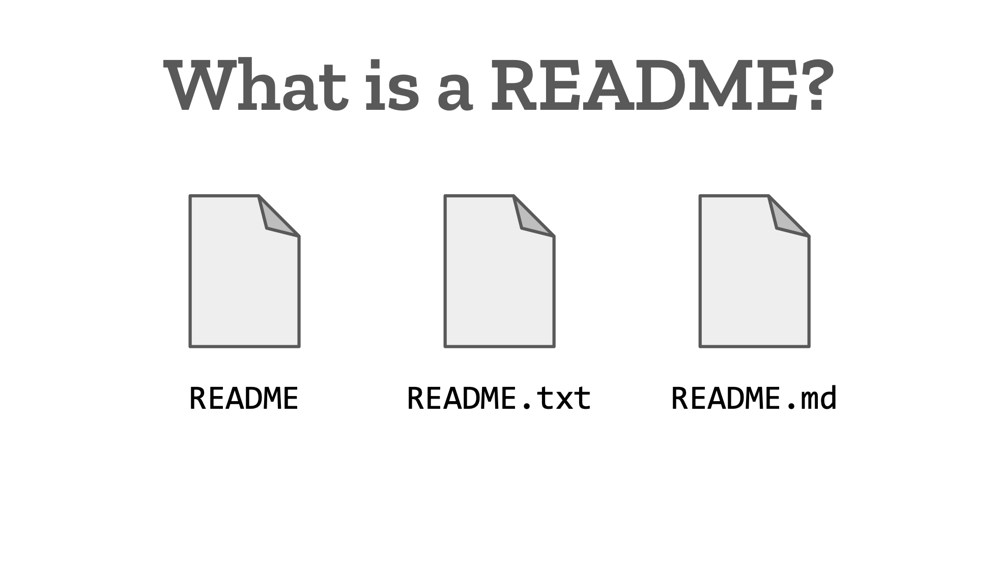
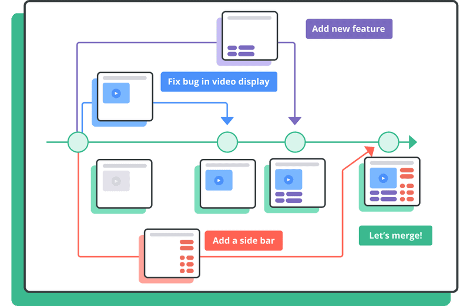

What is the purpose of a README file?
A README file serves as an introductory document for a project, providing users with essential information about the project's purpose, usage, and how to contribute. It's typically the first document a user or developer will encounter when exploring a repository or software package.
Read more

What is the purpose of a wireframe?
The primary purpose of a wireframe is to create a skeletal, visual layout of a webpage or application, focusing on structure, functionality, and user experience before adding visual design and content. It helps designers, developers, and stakeholders visualize the overall flow and layout of a project, facilitating communication and alignment on key features and navigation.
Read more

What is a branch in Git?
In Git, branches are a part of your everyday development process. Git branches are effectively a pointer to a snapshot of your changes. When you want to add a new feature or fix a bug—no matter how big or how small—you spawn a new branch to encapsulate your changes.
Read more